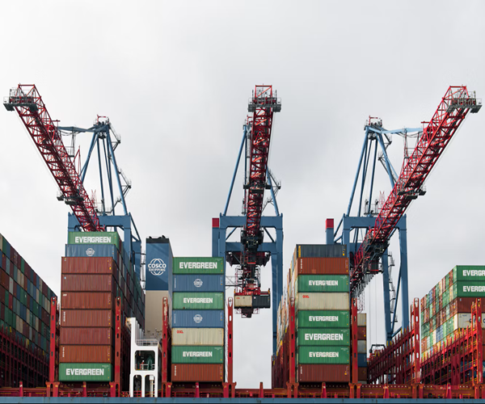

Smart Technology for Logistics & Transportation
Optimize your supply chain with real-time fleet tracking, AI-driven route planning, and intelligent dispatch systems that reduce costs, improve delivery times, and keep your goods moving.

What Is Logistics & Transportation Technology?
Logistics and transportation technology combines GPS tracking, telematics, and AI optimization to give you complete visibility and control over your fleet, drivers, and deliveries — from warehouse to doorstep.
Fleet Visibility
Track every vehicle, driver, and shipment in real time from a single dashboard.
Route Optimization
Reduce fuel costs and delivery times with AI-powered route planning and traffic insights.
Supply Chain Coordination
Connect warehouses, suppliers, and customers for seamless end-to-end logistics.
What You Get
Real-Time GPS Tracking
Monitor vehicle location, speed, and status with live GPS tracking across your fleet.
Smart Route Planning
AI-driven routing that factors in traffic, weather, and delivery windows.
Driver Safety & Coaching
Monitor driving behavior, reduce accidents, and improve fuel efficiency with AI coaching.
Fleet Maintenance Alerts
Predictive maintenance alerts to avoid breakdowns and costly downtime.
Warehouse Integration
Sync inventory and shipment data between warehouses and delivery vehicles.
Delivery Analytics Dashboard
Track on-time performance, costs, and fleet utilization in real time.
Why Choose Logistics Technology
Reduce Fuel Costs
Save up to 25% on fuel with optimized routes and driver coaching.
Faster Deliveries
Improve on-time delivery rates by up to 30% with real-time routing.
Increase Fleet Uptime
Reduce vehicle downtime with predictive maintenance alerts.
Improve Safety
Reduce accidents and insurance costs with real-time driver monitoring.
Frequently Asked Questions
Answers for fleet owners and transport operators about tracking, routing and fleet performance.
What is logistics and transportation technology?
It is software that gives you live visibility of vehicles, plans efficient routes, supports drivers and connects fleet activity with warehouses and customers.
How does real-time GPS tracking help my fleet?
You can see where every vehicle is, respond quickly to delays and keep customers informed, while the delivery analytics dashboard shows how your fleet performs over time.
Can smart route planning reduce fuel costs and delivery times?
Yes. Smart route planning picks more efficient paths, which helps you reduce fuel costs and complete deliveries faster.
How does it improve driver safety and vehicle uptime?
Driver safety and coaching tools highlight risky driving behaviors so you can address them, and fleet maintenance alerts remind you when vehicles need service, which helps keep them on the road.
Can it integrate with our warehouse operations?
Yes. Warehouse integration links dispatch and fleet data with your warehouse, so loading, delivery and inventory stay in sync.
Ready to Transform Your Logistics?
Let's discuss how our logistics and transportation technology can reduce costs and boost efficiency.